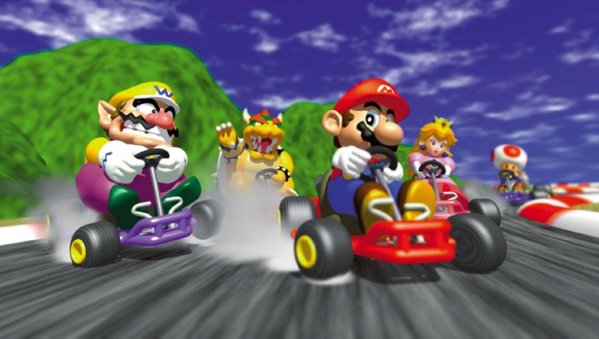
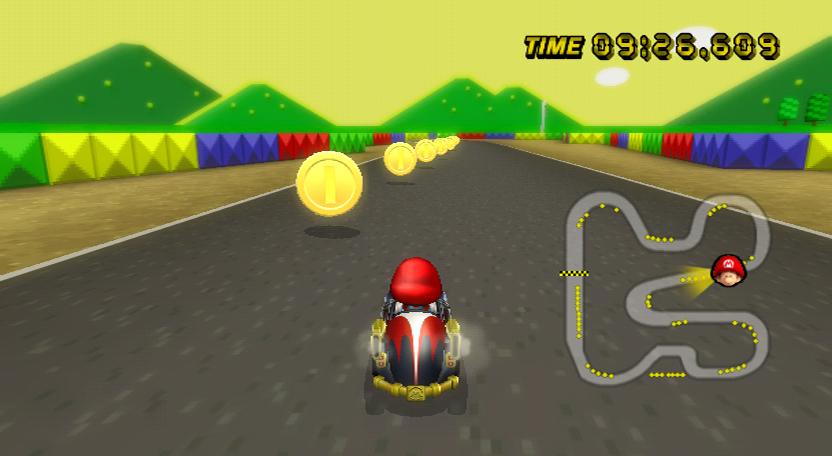
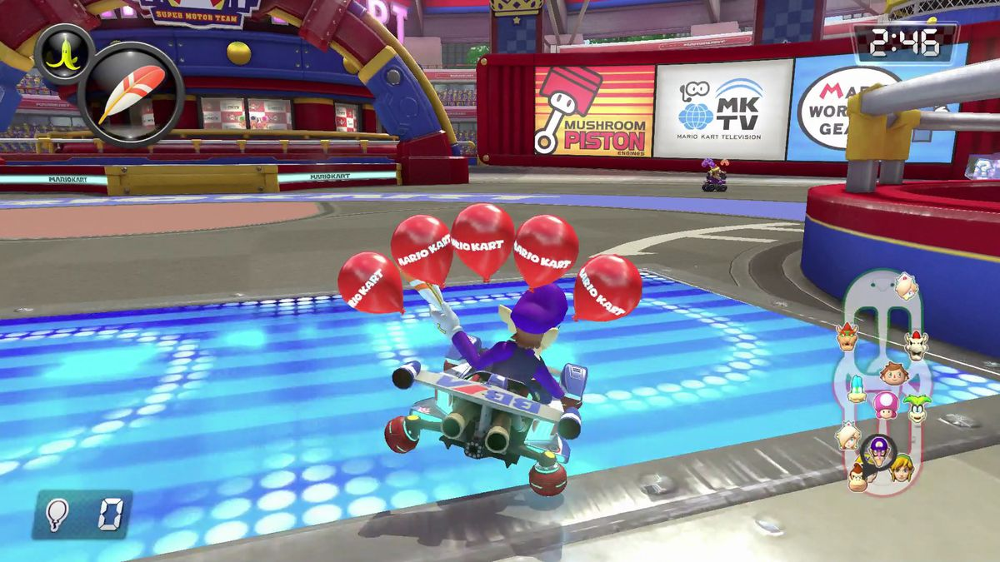
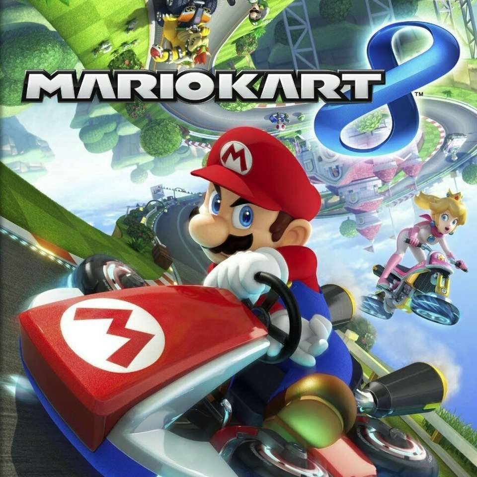
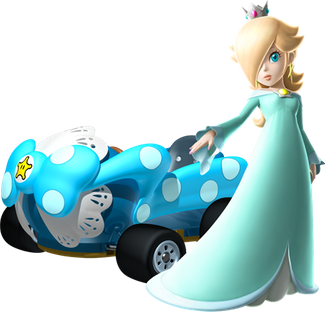

Racing
Player gets to pick a Mario Kart character and a bike or cart to compete in a race with 11 other players. There are 32 possible tracks to race on, each having to do with a different setting/character in Mario Kart.
Coin Runners/ Balloon Battles
A time based minigame in Mario Kart where the player needs to collect as many coins or keep safe as many balloons as possible and prevent the enemy from collecting more coins/ balloons. All the regular rules and power up boxes are available, but the player is not racing.
 Mario Kart 8:
Mario Kart 8 released in 2014 is the newest version of Mario Kart. It includes features like anti-gravity (players can drive up ceilings and walls), three new characters, and 16 new tracks.
 